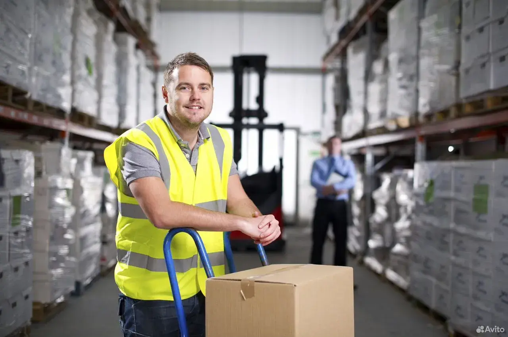

🇱🇹 Литва · предложения и информация
Работа в Литве: производство и склады
Вильнюс и Каунасский район; предложения из предоставленного каталога

Расчёты зарплат и цены приведены по исходной презентации и не проверены по действующим договорам.
Приглашаем граждан Казахстана, Таджикистана, Узбекистана и других стран в возрасте от 25 до 55 лет. Обязательно знание русского языка. Литва ждет вас!
Наладчики Производственного Оборудования (Вильнюс)
Мы ищем опытных специалистов для установки, настройки, испытания, обслуживания и ремонта различного оборудования в производстве электроники.
Требования
- Мужчины до 55 лет
- Опыт работы от 1 года с дипломом
- Без знания литовского языка
График плавающий, по 12 часов, две смены (дневные/ночные). Возможны дополнительные смены или выходные.
Помощник Оператора (Вильнюс)
Присоединяйтесь к нашей команде в Вильнюсе! Мы ищем помощников оператора для работы с экструдером, выдувания и изготовления пакетов из гранул. Опыт не требуется — всему научим!
Обязанности
- Работа с экструдером
- Выдувание пакетов
- Изготовление пакетов из гранул
Требования
- Мужчины до 45 лет
- Можно без опыта работы
- Без знания литовского языка
График плавающий, по 12 часов, две смены. Возможность брать дополнительные смены.
Водитель Вилочного Погрузчика (Вильнюс)
Ищем ответственных водителей вилочного погрузчика для работы на складе. Ваши обязанности будут включать загрузку, выгрузку готовой продукции и тюков с вторсырьем, а также перемещение продукции по складу.
Загрузка/Выгрузка
Готовой продукции и вторсырья.
Перемещение
Продукции по складу.
Требования: мужчины и женщины до 55 лет, опыт работы от 1 года, без знания литовского языка. График плавающий, 12-часовые смены.
Сортировщики (Вильнюс)
Приглашаем сортировщиков для работы с вторсырьем. Ваша задача — перебирать тюки по цвету, сортировать пленку и загружать ее на переработку. Опыт не требуется!
Сортировка по цвету
Перебирать тюки с вторсырьем.
Удаление этикеток
Сортировать пленку, выбрасывать этикетки.
Загрузка на переработку
Подготовка материалов для дальнейшей обработки.
Требования: мужчины и женщины до 55 лет, без опыта работы, без знания литовского языка. График плавающий, 12-часовые смены.
Электромонтер (Вильнюс)
Ищем квалифицированных электромонтеров для обеспечения бесперебойной работы оборудования и приборов. Вы будете проводить плановые ремонтные работы электрооборудования.
Обязанности
- Бесперебойная работа оборудования
- Плановые ремонтные работы
Требования
- Мужчины, женщины до 55 лет
- Опыт работы, диплом, удостоверение, допуск
- Без знания литовского языка
График плавающий, 12-часовые смены (дневные/ночные). Возможность брать дополнительные смены.
Электронщик / Наладчик Производственного Оборудования (Вильнюс)
Мы ищем электронщиков для модернизации устаревшего электрооборудования, разработки и сборки систем управления для автоматизированных производственных линий.
Модернизация
Устаревшего электрооборудования станков (экструдера, производства гранул, переработки полиэтилена).
Разработка и Сборка
Систем управления для автоматизированных производственных линий.
Требования: мужчины, женщины до 55 лет, опыт работы, диплом, удостоверение, допуск. Без знания литовского языка. График плавающий, 12-часовые смены.
Подсобники / Прессовщики (Вильнюс)
Приглашаем подсобников и прессовщиков для выполнения общих работ на предприятии. Это отличная возможность начать карьеру без опыта!
Сбор пленки и брака
Прессовка пленки
Помощь оператору
Требования: мужчины до 55 лет, без опыта работы, без знания литовского языка. График плавающий, 12-часовые смены.
Оператор Линии (Машин) (Вильнюс)
Ищем операторов линии для работы с производственными машинами. Ваша задача — установка рулонов, заправка и запуск машин, настройка под разные позиции, контроль температуры и качества продукции.
Запуск и Настройка
Установка рулонов, заправка и запуск машины, настройка под разные позиции.
Контроль Качества
Контроль температуры, технического состояния машины и качества пакетов.
Документация
Регистрация паллет в программе, заполнение бланка о выполненной работе.
Обслуживание
Поддержание порядка, уборка в конце смены, мелкий ремонт по возможности.
Всему обучаем. Главное — интерес и техническое мышление.
Сборщики Деревянных Поддонов (Каунасский Район)
Приглашаем сборщиков деревянных поддонов на предприятие в Каунасском районе. Стабильная работа с достойной оплатой!
800-1100€
Оплата
Ежемесячно
Рабочих часов
В день
Дней в неделю
Стандартный график
В сезон по желанию рабочих часов может быть больше. Отличная возможность для тех, кто ищет стабильную работу в Литве.
Перед оплатой услуг и подписанием документов запросите письменное подтверждение работодателя, правил трудоустройства и полного перечня расходов.